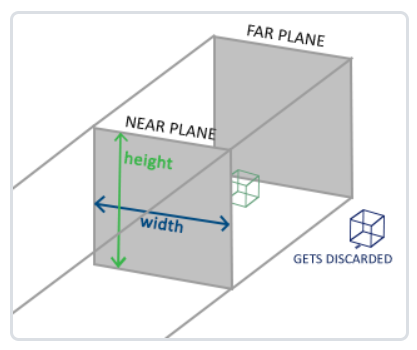

坐标
1. 概述
对物体的不同操作有不同的意义，你如：当需要对物体进行修改的时候，在局部空间中操作会比较合理；如果要对一个物体做出一个相对于其它物体位置的操作时，在世界坐标系中更合理，等等。因此也衍生出了不同的坐标空间。
2. 坐标空间
- 局部空间
物体所在的坐标空间，即对象最开始所在的地方。建模软件中创建了一个立方体，立方体的原点有可能位于(0, 0, 0)，有可能创建的所有模型都以(0, 0, 0)为初始位置，然而它们会最终出现在世界的不同位置。所以，模型的所有顶点都是在局部空间中：它们相对于物体来说都是局部的。
- 世界空间
指顶点相对于游戏世界的坐标。如果希望将物体分散在世界上摆放，就需要将物体变换到世界空间。该变换是由模型矩阵(Model Matrix)实现的。模型矩阵能通过对物体进行位移、缩放、旋转来将它置于它本应该在的位置或朝向。经过模型矩阵变换后，物体的坐标将会从局部变换到世界空间。
- 观察空间
以摄像机为视角观察到的空间，因此也称摄像机空间。观察空间是将世界空间坐标转化为用户视野前方的坐标而产生的结果，因此观察空间就是从摄像机的视角所观察到的空间。改变换由观察矩阵(View Matrix)实现。
- 裁剪空间
OpenGL希望所有的坐标都在一个特定的范围内，所有不在范围内的顶点都会被裁剪丢弃，剩下才会进行处理，节省不必要的消耗。将顶点从观察空间变换到裁剪空间需要使用投影矩阵。指定了一个坐标范围，如：-100到100，投影矩阵会将该指定范围转换为标准化设备的范围(-1.0, 1.0)。所有在(-1.0, 1.0)之外的顶点都会被裁剪，比如顶点坐标为(80, 101)会被裁剪，因为转换后y坐标超出了范围，应该丢弃。
如果只是图元(Primitive)，例如三角形，的一部分超出了裁剪体积(Clipping Volume)，则OpenGL会重新构建这个三角形为一个或多个三角形让它能够适合这个裁剪范围。
由投影矩阵创建的观察箱(Viewing Box)被称为平截头体(Frustum)，每个出现在平截头体范围内的坐标都会最终出现在用户的屏幕上。将特定范围内的坐标转化到标准化设备坐标系的过程被称之为投影(Projection)。
当所有顶点被变换到裁剪空间，会执行透视除法，在这个过程中做的就是将位置向量的x，y，z分量分别除以向量的齐次w分量；目的是把4D裁剪空间的齐次坐标变换为3D标准化设备坐标。这一步会在每一个顶点着色器运行的最后被自动执行。
在这一阶段之后，最终的坐标将会被映射到屏幕空间中（即glViewport中的设定），并被变换成片段。投影矩阵有两种：
正交投影

正交投影定义了一个类似立方体的平截头箱，它定义了一个裁剪空间，在这空间之外的顶点都会被裁剪掉。创建一个正射投影矩阵需要指定可见平截头体的宽、高和长度。上面的平截头体定义了可见的坐标，它由由宽、高、近(Near)平面和远(Far)平面所指定。任何出现在近平面之前或远平面之后的坐标都会被裁剪掉。
由于每个向量的w分量都没有进行改变（w分量等于1.0），因此透视除法后坐标不变，出现的视觉效果是，进出的物体和远处的物体大小一致，造成不真实感。
GLM创建正交投影矩阵：
1 | // 前两个参数指定了平截头体的左右坐标，第三和第四参数指定了平截头体的底部和顶部 |
透视投影
现实生活中近大远小的现象称为透视，要实现透视效果需要使用透视投影矩阵来完成。透视投影矩阵将给定的平截头体范围映射到裁剪空间，还会修改每个顶点坐标的w值，从而使得离观察者越远的顶点坐标w分量越大。被变换到裁剪空间的坐标都会在-w到w的范围之间（任何不在这个范围的坐标都会被裁剪掉）。OpenGL对在范围内的顶点进行透视除法操作：
$out=\begin{pmatrix} x/w \\ y/w \\ z/w \end{pmatrix}$
由于越远的物体w分量越大，因此模拟除了透视效果，这是w重要用途之一。
GLM创建透视投影矩阵：
1 | // 第一个参数定义了fov的值，表示的是视野(Field of View)，想要一个真实的观察效果，它的值通常设置为45.0f，但想要一个末日风格的结果你可以将其设置一个更大的值 |
当你把透视矩阵的 near 值设置太大时（如10.0f），OpenGL会将靠近摄像机的坐标（在0.0f和10.0f之间）都裁剪掉，这会导致在游戏中的视觉效果：太过靠近一个物体的时候你的视线会直接穿过去。
由于正交投影没有使用透视，远处的物体不会显得更小，所以正射投影主要用于二维渲染以及一些建筑或工程的程序，在这些场景中更希望顶点不会被透视所干扰。
- 屏幕空间
顶点着色器的输出要求所有的顶点都在裁剪空间内，因此先将顶点从局部空间转换到裁剪空间：
$V_{clip}=M_{projection} \cdot M_{view} \cdot M_{model} \cdot V_{local}$
转换到裁剪空间后，最后会将结果赋值给顶点着色器的gl_Position，OpenGL将会自动进行透视除法和裁剪操作。
OpenGL接着会对裁剪坐标执行透视除法将它们变换到标准化设备坐标。OpenGL使用glViewPort内部的参数将标准化设备坐标映射到屏幕坐标，每个坐标都关联了一个屏幕上的点，这个过程称为视口变换。
物体变换过程：
- 局部坐标是对象相对于局部原点的坐标，是物体起始的坐标
- 将局部坐标变换为世界空间坐标，这些坐标相对于世界的全局原点，它们会和其它物体一起相对于世界的原点进行摆放
- 将世界坐标变换为观察空间坐标，使得每个坐标都是从摄像机或者说观察者的角度进行观察的
- 坐标到达观察空间之后，需要将其投影到裁剪坐标。裁剪坐标会被处理至-1.0到1.0的范围内，并判断哪些顶点将会出现在屏幕上
- 最后将裁剪坐标变换为屏幕坐标，这是视口变换(Viewport Transform)的过程。视口变换将位于-1.0到1.0范围的坐标变换到由glViewport函数所定义的坐标范围内。最后变换出来的坐标将会送到光栅器，将其转化为片段
3. 实现3D效果
1 | // 创建模型矩阵 |
顶点着色器：
1 |
|
效果：
- 3D立方体
1 | // 36个顶点数据，包含顶点坐标和纹理 |
效果：

5. 更多立方体
1 | // 每个立方体的位置 |
效果：